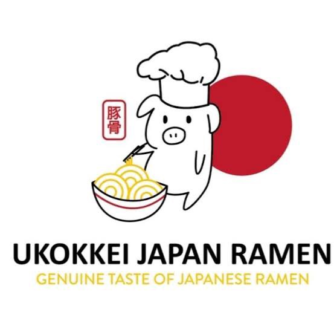
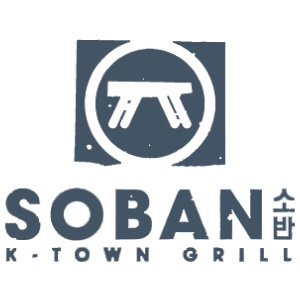
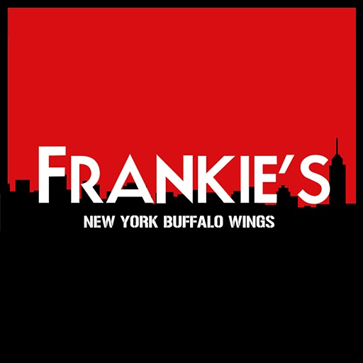
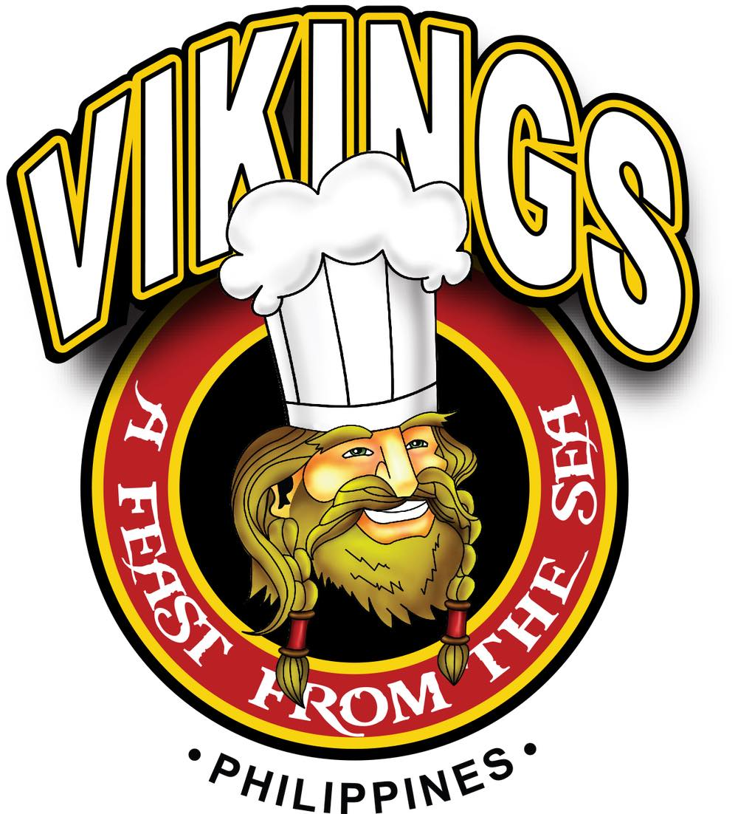
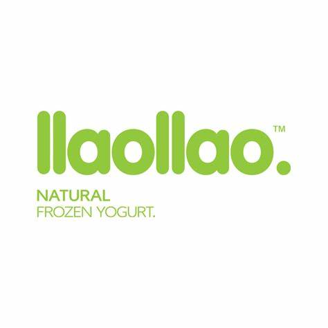
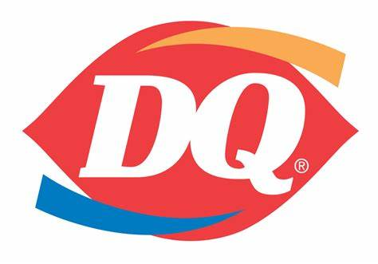
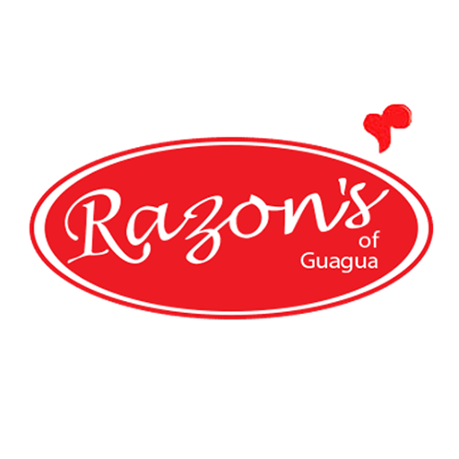

At Fave Spots, you may satisfy all of your gastronomic cravings. Enjoy a gastronomic adventure that caters to every palate, delivering a varied selection of flavors and dining experiences, from regional specialties to international cuisines.
Eastern Food

Ukokkei Japan a new venture from the people behind Ukokkei Ramen Ron, features the local specialty ramen of 10 different cities in Japan. Its bestseller is the Kumamoto Mau Ramen.
Location: G/F Food Court, North Ave cor EDSA, SM City North EDSA, Bagong Pag-Asa, Quezon City, Metro Manila
Visit Website

UG/F, North Ave cor EDSA, SM City North EDSA, Bagong Pag-Asa, Quezon City, Metro Manila
Location: Located at the 2nd floor, The ANNEX, SM City North EDSA
Visit Website
Western Food

Frankie’s is in it to win it with their tasty and delectable wings. Get the bang for your buck and give their must-orders a try like the Frankie’s Classic Buffalo, Garlic Parmesan, Cheesy Bacon and Hickory BBQ.
Location: UG/F, North Ave cor EDSA, SM City North EDSA, Bagong Pag-Asa, Quezon City, Metro Manila
Visit Website
International Food

Vikings, one of the top buffet businesses in the nation, offers a unique all-you-can-eat dining experience. Eat your way through the various tastes and flavors from all around the world by feasting like a Viking.
Location: 4/F The Block, North Ave cor EDSA, SM City North EDSA, Bagong Pag-Asa, Quezon City, Metro Manila
Visit Website
Desserts

llao llao is a frozen yogurt chain known for its fresh and creamy yogurt offerings topped with a variety of fruits, sauces, and other delicious toppings. They offer a customizable experience, allowing customers to create their own unique yogurt combinations.
Location: located at the, upper ground floor,, SM City North EDSA, Bagong Pag-Asa, Quezon City, Metro Manila
Visit Website

Dairy Queen is an international fast-food chain known for its soft-serve ice cream and other frozen treats. They offer a variety of ice cream flavors, sundaes, milkshakes, blizzards (a blend of soft-serve ice cream with mix-ins), and other sweet treats.
Location: located at the at Annex Building Upper Ground Floor SM City North EDSA, Bagong Pag-Asa, Quezon City, Metro Manila
Visit Website

Razon's of Guagua is a renowned Filipino restaurant that offers a range of delectable desserts. One of their most famous creations is their signature halo-halo, a delightful mix of crushed ice, sweetened bananas, macapuno, leche flan, ube jam, and saba bananas. Known for its simplicity and high-quality ingredients, Razon's halo-halo stands out for its smooth consistency and irresistible flavors. Additionally, Razon's is celebrated for its velvety leche flan, a classic Filipino custard dessert, and their creamy and flavorful ube halaya, a sweet purple yam treat. With their commitment to preserving traditional Filipino flavors, Razon's of Guagua offers a dessert experience that captures the essence of Filipino cuisine.
Location: located at the upper ground floor,, SM City North EDSA, Bagong Pag-Asa, Quezon City, Metro Manila
Visit Website
.png)